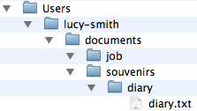
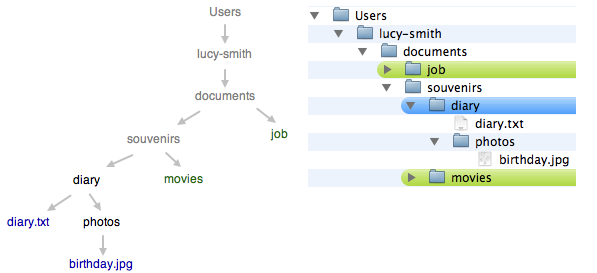
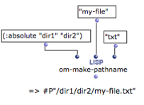

OpenMusic DocumentationHiérarchie de section : OM 6.6 User Manual > Visual Programming II > Files > Pathnames
OpenMusic DocumentationHiérarchie de section : OM 6.6 User Manual > Visual Programming II > Files > Pathnames
Navigation : page précédente | page suivante
Attention, votre navigateur ne supporte pas le javascript ou celui-ci à été désactivé. Certaines fonctionnalités de ce guide sont restreintes.
Creating and Using Pathnames
Generalities about Pathnames
Pathnames designate files, folders and their location on a computer system. They are mainly used by the programs to read and write information stored on the hard disk.
Files Names
File names, such as "diary.txt", are generally made of a main name : "diary", and an extension preceeded by a dot : ".txt"
Representations on Unix-Based Systems and Windows
|

|
Absolute and Relative Pathnames
Pathnames can be absolute[1] or relative[2]. An aboslute pathname describes a path from the root directory to an object. A relative pathname describes a path from the directory wherein the user is working. This directory is called the "current directory". Upstream directories are called "parent directories".
In relative pathnames, the current directory is expressed with "." . Parent directories[3] are expressed with "..".

The current directory is "diary".
./diary.txt leads to a file named "diary" in the current directory.
./photos/birthday.jpg leads to a file that is located in a subdirectory of the current directory.
../movies refers to another directory, located in the parent directory of the current directory.
../../job refers to a directory, located in another directory, two levels above the current directory.
Manipulating Pathnames in Common Lisp
Independent Use of Pathnames
In Common Lisp, pathnames can be handled independently from any operating system.
A pathname is represented with "#P" followed by the pathname, as formulated in UNIX representations with a string[4].
For instance **** : #P"/Users/lucy-smith/documents/souvenirs/old-diary/diary.txt
Constructing and Inspecting Pathnames with Common Lisp
Pathnames can be constructed with the function make-pathname.
A pathname can be described with several components, such as : a name[5], a type[6], a directory[7] and so on. Pathname components such as names, types and directories are expressed with strings[4], such as :name "my-file" or :type "txt"
- Pathnames can be inspected with the functions pathname-name , pathname-directory , pathname-type , etc.
Converting Strings / Pathnames
The namestring and pathname functions alllow to convert pathnames into simple strings and vice-versa.
Representing Directories in Lisp
To represent the directories wherein a file is located, write a list of directory names preceeded by the :abolute or :relative symbols. For instance, the pathname from a root directory to a file named "my-file" is created as follows:
(make-pathname :directory '( :absolute "Users" "my-name" "directory1") :name "my-file" :type "txt")
Lisp Documentation
Find more information about pathnames in Common Lisp here.
Pathnames in OM
Creating a Pathname
The Lisp pathname functions can be used in OM as any other Lisp functions. The om-make-pathname is an additional facility provided by OM to build pathnames. The keywords arguments of this function allow to specify a file name, extension, and a directory separately. |

|
Using Strings in OM
In OM, many functions requiring pathnames as inputs also accept a string representation.
The File Chooser Box
The file-chooser box allows to select a file or folder via a pop up window.

It has three optional arguments, which offer several options to define the type of object and its location :
- file / folder:
- existing / new
- home / desktop / other
The output of the file chooser is the selected file or directory pathname, or nil.
Locking the File-Chooser
Note : lock the box to keep the selected pathname in the box. Otherwise, the file chooser dialog window will pop up at each evaluation. |

|
Références :
Absoluate Pathname
An absolute pathname, also referred to as an absolute path or a full path, is the location of a filesystem object – file, directory or link– relative to the root directory.
Relative Pathname
A relative pathname tells the location of a filesystem object relative to the directory in which the user is currently working.
Parent Directory
A parent directory is the directory in which a given directory is located. In an absolute path, the parent directoy is the predecessor of the current directory.
String
A characters chain between two inverted commas.
Name
The name of a group of files that can be thought of as the "same'' file
Directory
Corresponds to the "directory'' concept in many host file systems: the name of a group of related files (typically those belonging to a single user or project).
Plan :
Navigation : page précédente | page suivante
A propos...(c) Ircam - Centre Pompidou